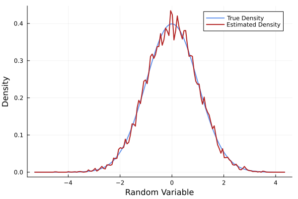

ParallelKDE
ParallelKDE is a package for flexible and efficient kernel density estimation (KDE), with a strong focus on parallel implementations. Its core estimator, the Parallel Estimator described here, supports CPU and GPU acceleration (threaded and CUDA), and its designed to scale with modern hardware. While the package is centered around grid-based KDEs, it also provides extensible infrastructure to support and implement other types of estimators.
The user interface is built around a modular design that separates concerns between grids, devices, density objects and estimation routines. This allows users to easily switch estimators, control execution targets (e.g., CPU or GPU), and prototype new estimation strategies without rewriting boilerplate code.
Typical usage involves:
- Instantiating an estimation in a specific device (e.g., CPU, CUDA),
- This also involves defining a grid for the estimation or using a default grid,
- Estimating the density with a chosen estimator,
- Accessing the resulting density.
For example, to estimate a density on a CPU with a default grid using the GradePro Estimator, you can use:
using ParallelKDE
data = randn(1, 10000) # 1-dimensional sample of 10000 points
density_estimation = initialize_estimation(
data,
grid=true,
device=:cpu,
)
estimate_density!(
density_estimation,
:gradepro,
)
density_estimated = get_density(density_estimation)We can evaluate the standard normal distribution for comparison:
using Distributions
grid_coordinates = get_coordinates(get_grid(density_estimation))[1, :]
density_true = pdf.(Normal(), grid_coordinates)which would yield a plot like this:
p = plot(grid_coordinates, density_true, label="True Density", color=:cornflowerblue, lw=2)
plot!(p, grid_coordinates, density_estimated, label="Estimated Density", color=:firebrick, lw=2)
plot!(p, xlabel="Random Variable", ylabel="Density")GKS: cannot open display - headless operation mode active
As it is exemplified above, it is possible to initialize an estimation using
ParallelKDE.initialize_estimation — Functioninitialize_estimation(data; kwargs...)Initialize a density estimation object based on the provided data.
Arguments
data::Union{AbstractMatrix,AbstractVector{<:AbstractVector}}: The data to be used for density estimation.grid::Union{Bool,G<:AbstractGrid}=false: Whether to create a grid for the density estimation.
If true, a grid will be created based on the data ranges. A grid can also be provided directly.
grid_ranges=nothing: The ranges for the grid coordinates ifgridistrue.
This has priority over other grid parameters.
dims=nothing: The dimensions of the grid ifgridistrue.grid_bounds=nothing: The bounds for the grid ifgridistrue.grid_padding=nothing: Padding for the grid ifgridistrue.device=:cpu: The device to use for the density estimation. It should be compatible with the estimator to be used.
Examples
data = randn(1, 1000);
density_estimation = initialize_estimation(data; grid=true, grid_ranges=-5.0:0.1:5.0, device=:cpu);Then, the density can be estimated with a chosen estimator and its settings using
ParallelKDE.estimate_density! — Functionestimate_density!(density_estimation::DensityEstimation, estimation_method::Symbol; kwargs...)Estimate the density using the specified method and update the DensityEstimation object.
For a list of available estimation methods and their keywords, see the documentation for the specific estimator.
Finally, the estimated density can be accessed using
ParallelKDE.KDEs.get_density — Methodget_density(density_estimation::DensityEstimation; normalize=false, dx=nothing)Obtain the estimated density from a DensityEstimation object.
If the normalize argument is set to true, the density will be normalized. If density_estimation has a grid, its spacing will be used for normalization. Otherwise, dx must be provided to normalize the density.
More details regarding the currently implemented estimators as well as further information about the package can be found throughout the documentation.